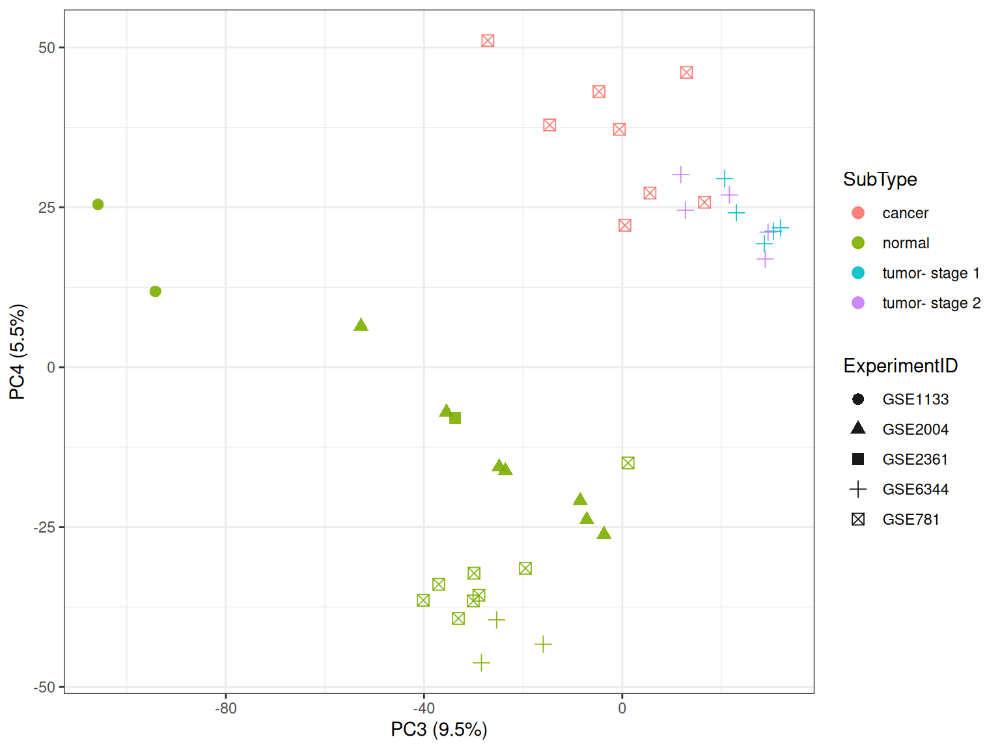

You have found an older gene-expression dataset generated using microarray technology. It contains measurements from 22,215 probes in 189 samples from seven tissues: kidney, hippocampus, cerebellum, colon, liver, endometrium and placenta.
e contains probes in rows and samples in columns, while tab contains the sample information. Match the rows of tab to the columns of e before running PCA.
stopifnot(ncol(e) ==nrow(tab),!anyDuplicated(colnames(e)),!anyDuplicated(tab$filename),setequal(colnames(e), tab$filename))tab <- tab[match(colnames(e), tab$filename), , drop =FALSE]stopifnot(identical(colnames(e), tab$filename))
The file contains four expression profiles that exactly repeat earlier columns. Keeping both copies would give those liver samples twice the weight in the PCA, so we keep the first copy of each profile.
e <- e[, !repeated_profile, drop =FALSE]tab <- tab[!repeated_profile, , drop =FALSE]dim(e)
[1] 22215 185
Exercise 1: PCA of all samples
prcomp() expects observations in rows and variables in columns.
Transpose e so that samples are rows and probes are columns. Call the new matrix x.
How many observations and variables does x contain after removing the repeated profiles?
What is the maximum number of principal components that can have non-zero variance after centring? Explain why.
Run PCA with centring but without scaling.
Calculate the proportion of variance explained by each component. How much do PC1, PC2 and the two together explain?
Draw a scree plot for the first 20 components.
Plot PC1 against PC2 without using the tissue labels. What groups or unusual samples can you see?
Colour the same points by Tissue. How does this change your reading of the plot?
Tip
Use t(e) to put samples in rows and dim() to check the result. Run the PCA with prcomp(x, center = TRUE, scale. = FALSE). The score matrix is stored in pca$x, while the component standard deviations are in pca$sdev. Square pca$sdev and divide by the sum of the squared values to obtain the proportion of variance explained. For plotting, combine as.data.frame(pca$x) with tab using cbind().
Solution
x <-t(e)dim(x)
[1] 185 22215
There are 185 observations and 22,215 variables. Centring makes the rows of x linearly dependent, so its rank cannot exceed \(n-1\). The maximum is therefore
The probes are measured on the same log-expression scale, so this PCA leaves them unscaled. Probes with greater variance therefore have more influence on the components.
Without labels, the points form several compact groups: one at high PC2, a broad group at negative PC1 and another at positive PC1. A few samples lie between or apart from these groups, but this plot alone does not tell us what they represent.
Tissue labels were not used to calculate the principal components. The groups that appear after adding the labels show that tissue is associated with a large part of the expression variation. This is an association, not evidence that tissue alone caused the separation.
Exercise 2: Looking beyond PC1 and PC2
PC1 and PC2 describe the two largest directions of total variation, but later components can still contain clear patterns.
For the full dataset, plot PC2 against PC3 and PC3 against PC4. Colour the points by tissue.
Which tissue groups become easier to distinguish in these views?
Why might a component with modest overall variance still be useful?
Select the kidney, colon and liver samples and fit a new PCA from the expression matrix.
How many samples remain?
Plot PC1 against PC2 and PC3 against PC4 for the new PCA.
What happens to the kidney samples along PC4?
Tip
The full-data scores are already in scores, so PC2, PC3 and PC4 can be used directly in ggplot(). Select samples with tab$Tissue %in% c("kidney", "colon", "liver"). Apply that logical vector to both e and tab, keep matrix dimensions with drop = FALSE, transpose the selected expression matrix and run a new prcomp(). The new scores are in pca3$x.
In the PC2–PC3 plot, colon and liver occupy distinct regions. The PC3–PC4 plot separates hippocampus from cerebellum more clearly along PC4. A component can describe a strong pattern in a small group of samples without accounting for much of the variance across the full dataset.
Fit a new PCA after selecting kidney, colon and liver samples. Removing the other tissues changes the centre and covariance structure, so the principal directions also change.
keep3 <- tab$Tissue %in%c("kidney", "colon", "liver")x3 <-t(e[, keep3, drop =FALSE])tab3 <- tab[keep3, , drop =FALSE]pca3 <-prcomp(x3, center =TRUE, scale. =FALSE)pve3 <- pca3$sdev^2/sum(pca3$sdev^2)scores3 <-cbind(as.data.frame(pca3$x), tab3)dim(x3)
The kidney samples form several groups along PC4. This pattern is difficult to see in the full analysis. Once the broad differences among all seven tissues are removed, variation within the remaining tissues accounts for more of the total variation.
Exercise 3: Biology, experiment, or both?
A pattern in a PCA plot may be related to biology, study design, or both. Use the sample metadata to examine the visible groups.
In the three-tissue PCA, plot PC3 against PC4 using colour for ExperimentID and shape for Tissue.
Examine table(Tissue, ExperimentID). Are tissue and experiment independently balanced?
Does an association with ExperimentID prove that a component is a batch effect? What information would you need before making that claim?
Look at the kidney samples again, this time using colour for SubType and shape for ExperimentID. Does the separation on PC4 follow experiment or subtype more closely?
Fit a separate PCA using only hippocampus and cerebellum samples.
Plot PC1 against PC2 using shape for Tissue and colour for ExperimentID.
Do the brain samples follow tissue or experiment more closely? Can those effects be separated with this study design?
Tip
Use with(tab3, table(Tissue, ExperimentID)) to inspect the study design. In ggplot(), map one metadata column to color and another to shape. Subset kidney rows with scores3$Tissue == "kidney". For the brain analysis, select the two tissues from e and tab, transpose the expression matrix and run a separate prcomp(). Match pca_brain$x to tab_brain with cbind() before plotting.
Colon samples come from one experiment, while kidney and liver samples are spread across several experiments. Tissue and experiment are not independently balanced. An apparent tissue pattern may contain study-specific variation, and an ExperimentID pattern is not by itself proof of a batch effect. To make that claim, we would need information about sample collection, laboratory and processing dates, platform, normalisation and any technical replicates.
Compare experiment and subtype within the kidney samples.
kidney3 <- scores3$Tissue =="kidney"ggplot( scores3[kidney3, , drop =FALSE],aes(x = PC3, y = PC4, color = SubType, shape = ExperimentID)) +geom_point(size =2.8, alpha =0.9) +labs(x =pc_axis(3, pve3),y =pc_axis(4, pve3) ) +theme_bw()

Most normal kidney profiles lie lower on PC4. The GSE781 cancer samples and the GSE6344 tumour samples lie higher, so the separation follows subtype more closely than experiment. The variables are still partly confounded, and the plot does not establish a cause.
For the brain comparison:
keep_brain <- tab$Tissue %in%c("hippocampus", "cerebellum")x_brain <-t(e[, keep_brain, drop =FALSE])tab_brain <- tab[keep_brain, , drop =FALSE]pca_brain <-prcomp(x_brain, center =TRUE, scale. =FALSE)pve_brain <- pca_brain$sdev^2/sum(pca_brain$sdev^2)scores_brain <-cbind(as.data.frame(pca_brain$x), tab_brain)with(tab_brain, table(Tissue, ExperimentID))
The visible brain groups follow ExperimentID more closely, especially along PC2. However, 30 of the 31 hippocampus samples come from GSE1297, while none of the cerebellum samples do. The study design does not let us separate tissue from experiment cleanly.
Exercise 4: Which probes contribute to a component?
A biplot with 22,215 probes would be unreadable. Instead, use the rotation coefficients to find the probes that contribute most strongly to a selected component.
Find the 15 probes with the largest absolute coefficients for PC1 of the full PCA.
Why should the ranking use the absolute coefficient rather than only positive coefficients?
Plot the expression of the highest-ranking PC1 probe across tissues.
Repeat the calculation for PC4 of the three-tissue PCA.
For the highest-ranking PC4 probe, plot expression in kidney samples by SubType and colour the points by ExperimentID.
What does a large absolute rotation coefficient tell you? Does it identify a causal probe?
Would the PCA result change if every score and coefficient for one component changed sign?
Tip
The probe coefficients are in pca$rotation; for example, pca$rotation[, 1] contains the PC1 coefficients. Use abs(), order(..., decreasing = TRUE) and integer indexing to find the largest values. A probe’s expression values can be extracted with e[probe_name, ]. For the kidney plot, use the matching column of x3 and map SubType to one axis and ExperimentID to colour.
Solution
Define a helper function that returns the largest absolute coefficients.
top_coefficients <-function(pca_object, pc =1, n =15) { z <- pca_object$rotation[, pc] n <-min(n, length(z)) idx <-order(abs(z), decreasing =TRUE)[seq_len(n)]data.frame(probe =names(z)[idx],coefficient =unname(z[idx]),abs_coefficient =unname(abs(z[idx])) )}top_pc1 <-top_coefficients(pca, pc =1)top_pc1
The probe is expressed more strongly in the normal kidney profiles and more weakly in the GSE781 cancer group and the GSE6344 tumour groups. This agrees with the PC4 pattern, but the probe was selected from the same PCA and does not provide independent evidence.
A large absolute rotation coefficient means that a probe contributes strongly to the direction of that component. It does not show that the probe caused the pattern. The sign of a PCA axis is arbitrary: reversing both its scores and coefficients gives the same solution.
Exercise 5: A simple biplot
A biplot shows samples and variables together. It quickly becomes unreadable with 22,215 probes, so this exercise uses four probes with contrasting loadings.
From pca$rotation, find the probes with the most positive and most negative loadings on PC1 and PC2.
Combine the four probe names and inspect their PC1 and PC2 loadings.
Extract these probes from x and run a new PCA using only these columns. Centre and scale the columns.
Draw the result with base R biplot().
Which arrows point in similar or opposite directions?
Calculate the correlation matrix for the four probes and draw a scatterplot matrix.
Do the correlations agree with the angles in the biplot?
Tip
The loading matrix is pca$rotation. Use which.max() and which.min() on its PC1 and PC2 columns, then use the selected names to subset x. Run prcomp(..., center = TRUE, scale. = TRUE) on the four-column matrix. Base R biplot() draws the samples and probe arrows. Use cor() for the exact correlations and pairs() to inspect them graphically.
Solution
Select one probe from each end of PC1 and PC2 in the full PCA.
loading12 <- pca$rotation[, c("PC1", "PC2"), drop =FALSE]selected_probes <-unique(c(rownames(loading12)[which.max(loading12[, "PC1"])],rownames(loading12)[which.min(loading12[, "PC1"])],rownames(loading12)[which.max(loading12[, "PC2"])],rownames(loading12)[which.min(loading12[, "PC2"])]))selected_loadings <-data.frame(probe = selected_probes, loading12[selected_probes, , drop =FALSE],row.names =NULL)selected_loadings
These probes were chosen because their loadings point towards different ends of the first two component axes. The selection is meant to make the biplot readable; it is not a list of the most biologically important probes.
Fit a small PCA using only the four selected probes. Scaling is useful here because the purpose is to compare their correlations.
The grey dots are samples and the red arrows are probes. Arrows pointing in the same direction suggest positive correlation, arrows at about 90 degrees suggest little linear correlation, and arrows pointing in opposite directions suggest negative correlation. A 45-degree angle corresponds roughly to a correlation of \(\cos(45^\circ) = 0.71\) when the two displayed components represent both probes well.
The first two components explain most of the variance in these four standardised probes, so the arrow angles give a useful summary. The correlation matrix gives the exact pairwise values.
Use a scatterplot matrix to see the same relationships in the original expression values. The upper panels report Pearson correlations; the lower panels show the observations and a smooth trend.
The two nearly opposite arrow pairs match strong negative correlations: 203485_at with 201596_x_at (\(r=-0.91\)), and 203400_s_at with 201650_at (\(r=-0.73\)). The acute angle between 203485_at and 203400_s_at matches their moderate positive correlation (\(r=0.49\)). The matrix is the exact result; the biplot angle is a visual approximation based on two components.